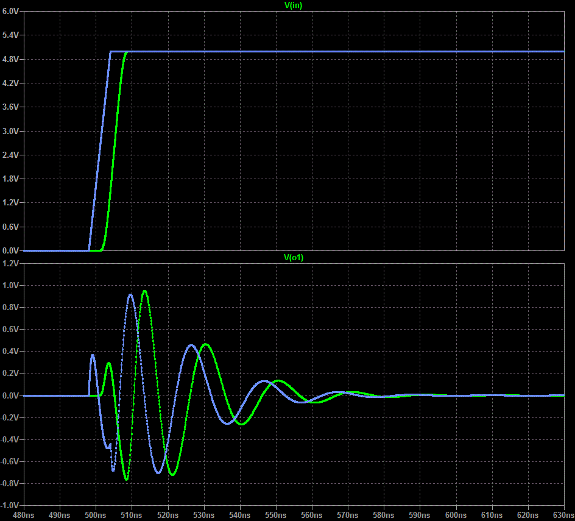
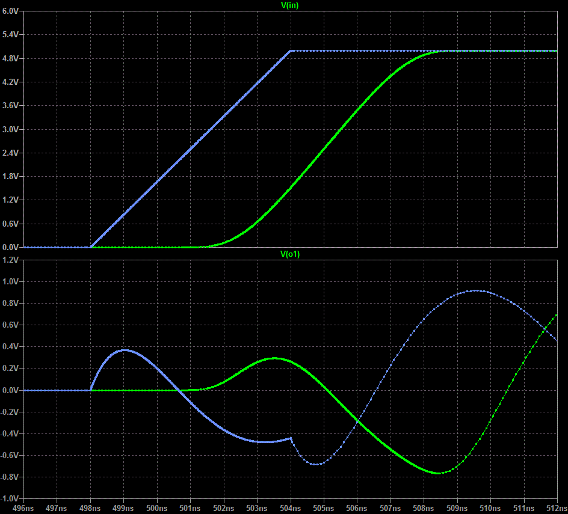

This report presents a series of on-going experiments using non-analytic smooth functions in SPICE simulations to synthesise signal shapes (step, pulse, periodic square, triangle, sawtooth, etc.) which are free from detectable discontinuities, in contrast to piecewise-continuous construction.
The methods presented here have proved effective in experiments to date on the LTSpice IV/XVII© simulators (see Acknowledgements). However, it is possible that other simulators would need extending or modification. For conditions of use please read the Copyright and Disclaimer Notice.
Signals and device models are often constructed in SPICE simulations using piecewise continuous functions, but the 'stitching' is visible when the functions are differentiated. A SPICE square wave stimulus signal typically has linear rise and fall sections, with constant sections between. A circuit which has a differentiating action will see an abrupt (nearly instantaneous) change in gradient between linear rise/fall and constant sections. (The rate of change of gradient at these mathematical corners is bounded in practice by the minimum time chosen between samples.) A more physically realistic square wave might be constructed using linear sections for rise/fall and quadratic ends for smoothing in the gradient better with the constant sections. The quadratic section might be made equal in gradient where it meets the linear mid-section. However the stitching is detectable here in the second derivative.
Given the greatly increased processing power available today compared to that in the early days of SPICE (perhaps one thousand times or greater), is there a way to synthesise fairly arbitrary shapes without detectable stitching?
A mathematically smooth function has continuous derivatives of all orders. Examples often used in SPICE simulations are sine, tanh, exponential and others. However, even here, for example, starting or stopping a sinusoid or a tanh in a time-series (.TRAN) simulation will result in a discontinuity in the first or second derivative.
A non-analytic smooth function has continuous derivatives of all orders and has the interesting (and very useful) property for SPICE simulations of being able to start from zero (or stop at zero) with all derivatives converging continuously from (or to) zero.
Adapting the simplest non-analytic function to SPICE, define a non-analytic smooth function, f(x)=0.0 for x≤xs, smooth start at x=xs, asymptotic to 1.0 for x>>xs. This one we name half-step, forward:-
.func Hstepf(x,xs,kc) {IF(x>{xs}, exp(-kc/(x-{xs})), 0.0)}
Define another function half-step, reverse with f(x)=0.0 for x≥xe :-
.func Hstepr(x,xe,kc) {IF(x<{xe}, exp(-kc/({xe}-x)), 0.0)}
Combine these into the smooth transition function, which has f(x)=0.0 for x≤xs, f(x)=1.0 for x≥xs+xr :-
.func SmStep(x,xs,xr) {
+ IF(x>=xs+xr, 1.0,
+ IF(x<=xs, 0.0,
+ Hstepf(x,xs,xr)/
+ (Hstepf(x,xs,xr)+Hstepr(x,xs+xr,xr))
+ )) }
This function can be used to synthesise a smooth voltage, current, variable resistance, or a transfer function (voltage gain, current gain, transconductance, etc.). For constructing periodic signals, the non-asymptotic nature of this smooth function is what makes it so useful. However the precise shape of the transition is not very controllable, for example, if we should require a linear mid-section (see later, below).
Using SmStep to drive a SPICE B-source voltage, with x equal to the SPICE 'time' variable, here is a smooth step voltage signal (upper plot), and shapes of the first five derivatives (lower plot, s1-s5) of this signal:-
(The derivatives are shown with arbitrary scaling as they will vary greatly in magnitude - the smoothness is of interest here). The step rise time is 100ns.
As well as uses as a step signal for input to an amplifier, filter, etc., this step can be used to simulate a soft-starting DC rail.
Using a rising and falling step multiplied together in a B-source gives a smooth square pulse:-
B1 Om Op I={VR}
+ {1/Rout}
+ * SmStep(time, {t0}, {Tr}) ; Rising step at t=t0, rise time Tr
+ * (1-SmStep(time, {t1}, {Tf}) ; Falling step at t=t1, fall time Tf
The following example of an asymmetric square pulse has Ton=325ns, Tr=100ns, Tf=200ns:-
Multiplying any smooth function, such as a sinusoid, by the non-analytic step function SmStep, or the simpler step Hstepf, results in another smooth function, so we have a soft-start method. The advantage of SmStep over Hstepf is that after the start rise time, the function being smoothed is unchanged (since it is multiplied here by exactly 1.0).
Starting (or stopping) a signal such as a sinusoid in the usual manner results in a discontinuity in the first or second derivative. Multiplying by the non-analytic smooth square pulse function (above) gives a smooth-start/stop sinusoid :-
The upper plot shows the soft-start/stop sinusoid; the lower plot shows the 1st and 2nd derivatives. Start and stop times are 100ns.
Expanding the time axis, shows soft-start detail of previous plot, plus 3rd-5th derivatives:-
Expanding the time axis again, showing also the sample points:-
Expanding the time axis once more to validate smoothness:-
.func tmt(tm,T) {tm-floor(tm/{T})*{T}} ; Periodic time
.func tmw() {tmt(time-{Ts},T)} ; Periodic window, aligned on time=Ts
B1 Om Op I={VR}
+ {1/Rout} ; Scale current to give VR pp across Rout
+ * SmStep(tmw(), 0, {Tr}) ; Rising step
+ * (1-SmStep(tmw(), {t1}, {Tf}) ; Falling step
Example shows five symmetric pulses, period T=600ns Ton=150ns, Tr=Tf=100ns (upper plot), with derivatives 1-5, s1-s5 (lower plot):-
And detail for one of the pulses in the series:-
A limitation of the smooth function examples so far is that the shape of the transition is defined by the relatively simple function SmStep. A sawtooth or triangle waveshape should have a near-linear mid-section. Or we may require a square wave with a nearly linear rise and fall. How to achieve this, and yet retain the smoothness property?
The answer is to synthesise the waveshape by integrating two smooth pulses, a positive pulse for the rising transition, and a negative pulse for the falling transition. The gap in time between the positive and negative pulses defines the Ton time, i.e. when the signal is not changing. The gap between the rising and falling transitions within each pulse, when integrated, defines a linear section, with gradient proportional to the pulse constant section. The integration can be implemented either directly using the SPICE ddt() function, or indirectly using an integrating circuit. The latter approach is followed here as it gave more reliable operation in practice.
The SmStep function is used to define B-source smooth current pulses which are integrated by a capacitor, one positive current pulse, and one negative pulse. The example is a smooth square asymmetric pulse with 60% linear mid-sections, Tr=150ns, Tf=200ns, and starting at t=500ns.
The computed parameters for the up and down pulses are shown:-
; Positive smooth square pulse
B2 0 ncs_tr I=
+ {1/Ap}*{1/Rs}* ; Scale for area
+ SmStep(time-500n, 0, 30n) ; Rising at t=500n, tr=30n
+ * (1.0-SmStep(time-620n, 0, 30n) ; Falling at t=620n, tf=30n
R2 ncs_tr 0 {Rs}
; Negative smooth square pulse
B3 0 ncs_tf I=
+ {1/An}*{1/Rs}*
+ SmStep(time-975n, 0, 40n) ; Falling at t=975n, tf=40n
+ * (SmStep(time-1135n, 0, 40n)-1.0) ; Rising at t=1135n, tr=40n
R3 ncs_tf 0 {Rs}
In practice, a single SPICE sub-circuit is used to compute the parameters, then output a pulse (see Appendix). The smoothing parts of each transition are equal in this example (30ns each for up, 40ns each for down), but can be chosen independently of each other.
Next integrate using a current source into a capacitor. For the same travel up as down, the areas of the pulses should be equal (via the Ap and An variables above.)
* Integration stage, using I source into C.
B4 0 s4 I=(V(ncs_tr)+V(ncs_tf))
C4 s4 0 {Cp}
* Output stage
Bout Om Op I=VR*{1/Rout}*V(s4)
Rout Op Om {Rout}
This is shown in the upper plot:-
The voltages at nodes ncs_tr and ncs_tf (see code listing previously) are shown in the middle plot. These are used to define another current source (named B4) which pumps current into capacitor C4. The first five derivatives of signal V(in0) are d1-5 in the bottom plot (arbitrary scaling).
The linear sections in both transitions are 60% of the rise/fall times in this example. These can be varied independently of one another from 0% (no linear section) to near 100%. Obviously as 100% linear is approached, then d2, the gradient of d1, for the smoothing in to the linear section will become unrealistically steep, and a discontinuity at exactly 100% linear.
A detail of the smooth square pulse falling edge is shown:-

The extent of the linear section in the falling transition of V(in) is clear in this plot. Note that the curve is exactly linear for 60% of 200ns, i.e. 120ns.
; Relative times within periodic time T for up (+) and down (-)
; pulses.
.func tmu() {tmt(time-{Tp},T)} ; Zero is at t=Tp
.func tmd() {tmt(time-{Tn},T)} ; Zero is as t=Tn
.params
; Current source into resistance
+ Rs=1k
...
; Positive smooth pulse, starts at t=Tp within periodic time window
B2 0 ncs_pr I=
+ IF(tmr(), ; Stimulus only inside time range tmr()
+ {1/Ap}*{1/Rs}* ; Scale for area
+ SmStep(tmu(), 0, {p0}) ; Offsets are relative to Tp
+ * (1-SmStep(tmu(), {p0+p2}, {p1}))
+ , 0.0) ; No stimulus
R2 ncs_tr 0 {Rs}
; Negative smooth pulse, starts at t=Tn within periodic time window
B3 0 ncs_pf I=
+ IF(tmr(),
+ {1/An}*{1/Rs}*
+ SmStep(tmd(), 0, {n0}) ; Offsets are relative to Tn
+ * (SmStep(tmd(), {n0+n2}, {n1})-1.0)
+ , 0.0)
R3 ncs_tf 0 {Rs}
(The implementation in SPICE makes greater use of functions and sub-ciruits, see Appendix.)
The example is for 10 cycles with period T=1usec, Tr=75ns, Tf=100ns, Ton=325ns and 60% linear sections in the transitions:-
Showing the detail of a rising transition with derivatives 1-5 (d1-d5):-
Now that we are able to construct linear sections in smooth periodic square waveforms, smooth triangle and sawtooth waveforms are possible by varying the on-time Ton and rise/fall transition characteristics of the previous function.
The example shows a triangle waveform of 10 cycles, period T=1us, with 80% linear section, Tr=500n, Tf=500ns and Ton=0:-
The linear section can be set close to 100% if desired, whilst still retaining smoothness, but obviously the magnitude of the higher derivatives will increase rapidly as 100% is approached.
Showing the detail of one triangle, resolving the integrated pulses (middle plot):-
Showing the detail of the peak of one triangle, resolving derivatives 1-5 (d1-d5):-
The sawtooth has a longer, near-linear rise transition, and a sharp falling transition. A realistic example might use a 90-98% linear section for the rising part, and a 0% linear for the falling part.
The example below shows a sawtooth waveform of 20 cycles, with period T=1us, a 95% linear section rise time with Tr=950ns, a 0% linear falling transition with Tf=50ns, and Ton=0:-

Expanding three cycles resolves the integrating pulses (middle plot). The peak values of the pulses V(ncs_pr), V(ncs_pf) are very different, reflecting the difference in rise and fall times (950ns vs 50ns), but the areas under the pulses (per cycle) are equal:-
Expanding one falling transition (Tf=50ns) in the sawtooth waveform resolves the derivatives 1-5 (d1-d5):-
Applications of the smooth functions described here will follow in future articles, but a first example is shown next.
The simulation results below compare a SPICE PULSE() function with piecewise linear sections to a smooth equivalent constructed using the SmStep function. The synthesised signals V(in) (green=smooth, blue=piecewise linear) are inputs to a 7th order Butterworth high pass filter, with output signals V(o1) shown in the lower plots in each graphic.
For the rising steps, the start times are offset slightly so that the input signals can be seen clearly:-



For the falling steps, the input signals are aligned as closely as possible, highlighting better the differences in the response signals V(o1):-
The following shows three smooth steps of increasing rise time versus a SPICE PULSE() with Tr=6ns :-
Increasing the time resolution highlights the step change in gradient (see lower plot V(o1)) for the PULSE() step (grey), whereas the quickest smooth step (red), though four times faster, moves with a continuous change of gradient:-
The author wishes to acknowledge Linear Technology's excellent LTSpice IV/XVII© circuit simulation software which is available for free download, and the wealth of helpful models and information available from the LTSpice users group.
The materials presented here in the form of plans, designs, models, templates, graphs, algorithms, procedures, functions, SPICE functions, SPICE sub-circuits, SPICE netlists, SPICE code, and pseudo-code, are the copyright of the author. You are permitted to reproduce (copy) these materials for experimentation in a commercial, academic, or any other context, ENTIRELY AT YOU OWN RISK, but you may not reproduce (copy) any of these materials in any product or package for sale without the author's express written permission, neither may this report, in its entirety, or in parts thereof, be reproduced (copied) anywhere in book, manual, technical, electronic, or any other format, without the permission of the author.
The essential LTSpice code used for synthesising smooth square signals with linear mid-sections, triangle and sawtooth shapes is listed here for information. Note that this is not the complete code library and is not runnable without additional supporting and validation code.
; Periodic time generator, return t=0 to t<T for period T from
; a linear time tm.
.func tmt(tm,T) {tm-floor(tm/{T})*{T}}
* Smooth pulse for integrating to construct smoothed linear transition
.subckt TSPulseTrans Op Om
+ params:
+ T=10u ; Period, cycle time
+ Tp=10u ; Start time for this pulse
+ Te=0 ; End time for waveform (all pulses)
+ Tr=1u ; Rise time (voltage rise VR)
+ Fnr=1 ; Rise function select
+ Tr0=0 Tr1=0 ; Rise function parameters (see above)
+ Cp=1n ; I into C integrator
*
* Assumes a positive going pulse. For negative pulse the
* caller simply needs to reverse the pins (Op, Om).
*
.params
; Current source into resistance
+ Rs=1k
; Area scale, voltage rise/fall due to current pulse Q=CV, Q=idt(I),
; for 1V multiply by As
+ As=1/Cp
; Default linear proportion in a rise/fall transition (0.6 -> 60% linear)
+ dl=0.6
; Compute time for the smooth end-sections
; in a rise or fall transition (tw=Tr or Tf).
.func TnSection(Fn,tw,t0,t1,s) {; s: =0 start-section, =1 end-section
+ IF(Fn==0, 0.0, ; No smooth sections, linear only
+ IF(Fn==1, (1-dl)*tw/2, ; Use default linear ratio
+ IF(Fn==2, (1-t0)*tw/2, ; t0 is linear ratio 0.0-1.0 (equal smooth sections)
+ IF(Fn==3, (tw-t0)/2, ; t0 is linear time (equal smooth sections)
+ IF(Fn==4, t0, ; t0 is start/end time (equal smooth sections)
+ IF(Fn==5, tw/2, ; No linear section (equal smooth sections)
+ IF(Fn==6, IF(s==0,t0,t1), ; t0=start-section time, t1=end-section time
+ INF ; Flag up an invalid function selection
+ )))))))}
; Area under rise/fall transition, times the scaling factor.
.func TnArea(t0,t1,t2) {((t0+t1)/2 + t2)*As}
.params
; Smooth start-section rise time
+ p0=TnSection(Fnr, Tr, Tr0, Tr1, 0)
; Smooth end-section fall time
+ p1=TnSection(Fnr, Tr, Tr0, Tr1, 1)
; Linear middle-section time
+ p2=Tr-p0-p1
; Area of positive pulse, scaled
+ Ap=TnArea(p0,p1,p2)
; Relative times within periodic time for up (+) and down (-)
; pulses.
.func tmu() {tmt(time-{Tp},T)} ; Zero is at t=Tp
; Positive smooth pulse, starts at t=Tp within periodic time window
B2 Om Op I=
+ IF(tmr(), ; Stimulus only inside time range tmr()
+ {1/Ap}*{1/Rs}* ; Scale for area
+ SmStep(tmu(), 0, {p0}) ; Offsets are relative to Tp
+ * (1-SmStep(tmu(), {p0+p2}, {p1}))
+ , 0.0) ; No stimulus
R2 Op Om {Rs}
.ends
* Periodic smooth waveforms with linear sections
.subckt TSPulse Op Om
+ params:
+ VR=5 ; Output voltage range (Op-Om)
+ T=10u ; Period, cycle time
+ Ton=5u ; On-time (at constant level, not including Tr,Tf)
+ Ts=10u ; Start time (first Tr begins at t=Ts)
+ Nc=0 ; Number of cycles (from start=Ts), 0=continuous)
+ Tr=1u ; Rise time (voltage rise VR)
+ Fnr=1 ; Rise function select
+ Tr0=0 Tr1=0 ; Rise function parameters (see above)
+ Tf=1u ; Fall time (voltage fall VR)
+ Fnf=1 ; Fall function select
+ Tf0=0 Tf1=0 ; Fall function parameters (see above)
+ Rout=1 ; Output impedance
.params
; I into C integrator
+ Cp=1n
; Start of pulses for rising transition, falling transition
+ Tp0=Ts Tp1=Ts+Ton+Tr
*
* Two sequences of pulses for integrating.
* Tp=Start of first pulse in sequence.
* Te=End time for pulses in sequence.
* Nc=Number of pulses in sequence.
*
* Pulse sequence for transitions from low to high
XP0 ncs_pr 0 TSPulseTrans T={T} Tp={Tp0} Te={tme(T,Tp0,Nc)}
+ Tr={Tr} Fnr={Fnr} Tr0={Tr0} Tr1={Tr1} Cp={Cp}
* Pulse sequence for transitions from high to low (pins are reversed)
XP1 0 ncs_pf TSPulseTrans T={T} Tp={Tp1} Te={tme(T,Tp1,Nc)}
+ Tr={Tf} Fnr={Fnf} Tr0={Tf0} Tr1={Tf1} Cp={Cp}
* Integration stage, using current source into capacitor.
B4 0 s4 I=(V(ncs_pr)+V(ncs_pf))
C4 s4 0 {Cp}
* Output stage with output resistance Rout,
Bout Om Op I={VR}*{1/Rout}*V(s4)
Rout Op Om {Rout}
.ends